Question 1 [4]
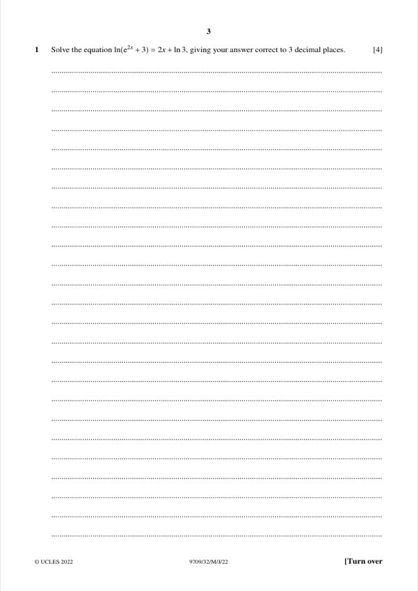
Original paper page 3
Solve ln(e²ˣ + 3) = 2x + ln 3, correct to 3 decimal places.
e²ˣ + 3 = 3e²ˣ → 2e²ˣ = 3 → x = ½ln(3/2)
x = 0.203
Mathematics Paper 3 (Pure Mathematics 3)

Solve ln(e²ˣ + 3) = 2x + ln 3, correct to 3 decimal places.
x = 0.203
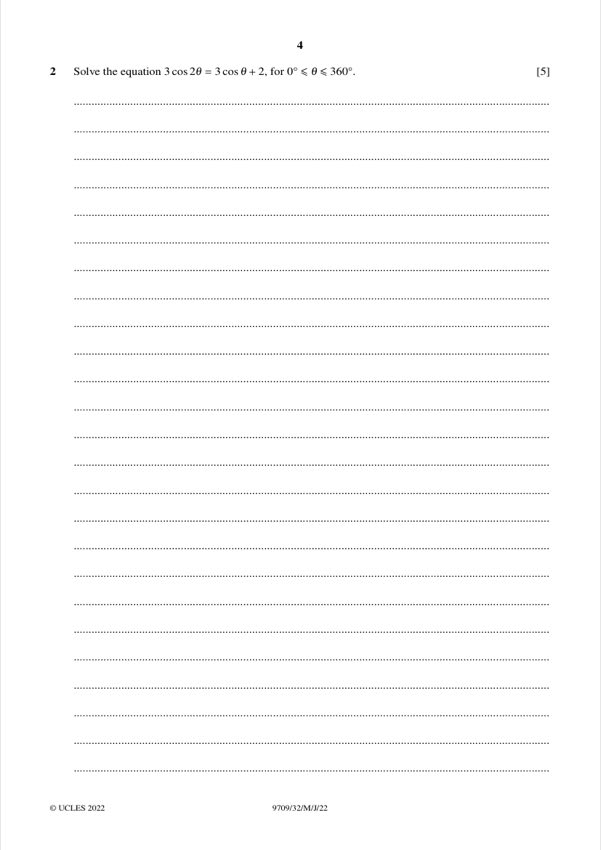
Solve 3cos2θ = 3cosθ + 2 for 0° ≤ θ ≤ 360°.
θ = 134.1°, 225.9°
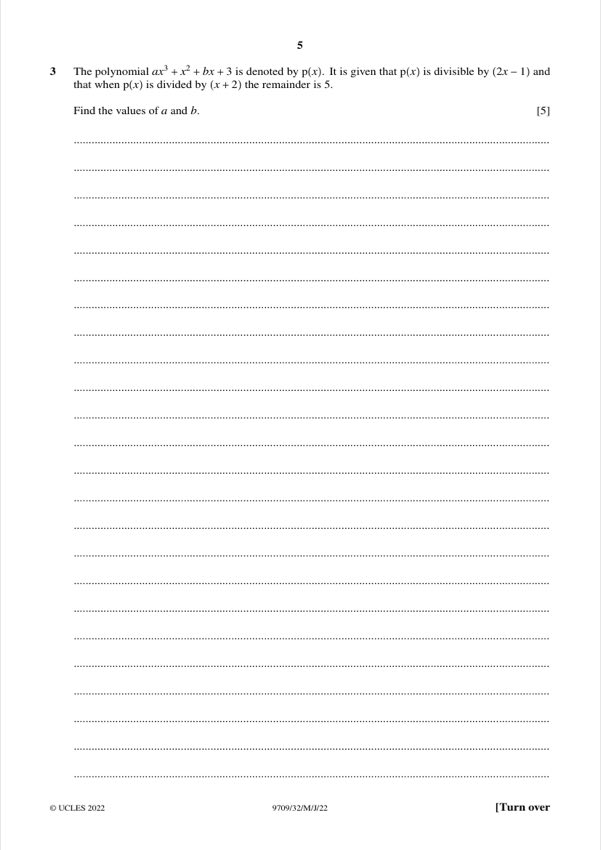
p(x) = ax³ + x² + bx + 3 is divisible by (2x − 1), and the remainder when divided by (x + 2) is 5. Find a and b.
a = 2, b = −7
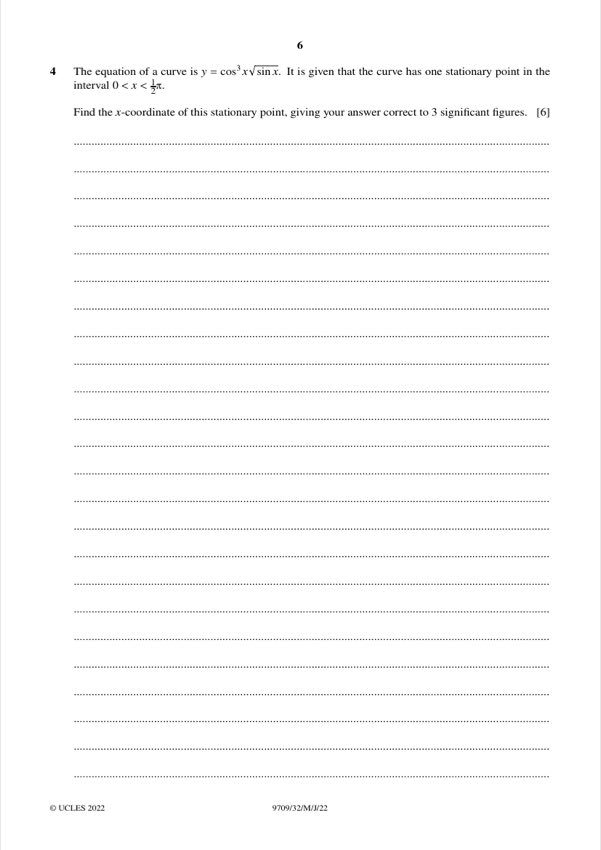
y = cos³x sinx has one stationary point in 0 < x < π/2. Find its x-coordinate to 3 s.f.
x = 0.524
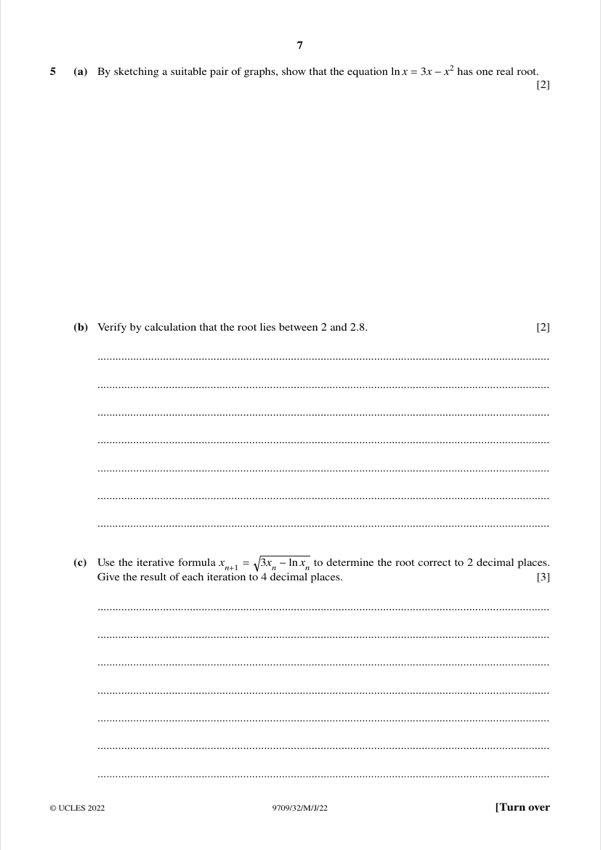
(a) [2] By sketching a suitable pair of graphs, show ln x = 3x − x² has one real root.
One real root.
(b) [2] Verify that the root lies between 2 and 2.8.
Sign change, so the root lies in (2, 2.8).
(c) [3] Use the iterative formula x_(n+1) = √(3x_n − ln x_n) to find the root to 2 d.p.
Root = 2.63
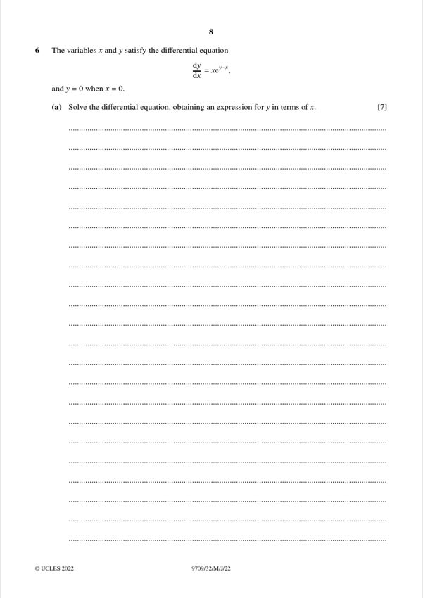
(a) [7] dy/dx = x e^(y−x), with y = 0 when x = 0. Solve the differential equation.
y = x − ln(x + 1)
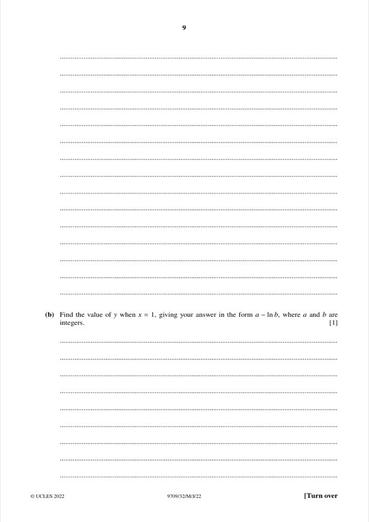
(b) [1] Find y when x = 1 in the form a − ln b.
a = 1, b = 2
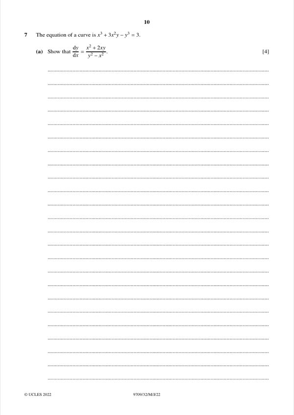
(a) [4] The curve x³ + 3x²y − y³ = 3. Show that dy/dx = (x² + 2xy)/(y² − x²).
Shown
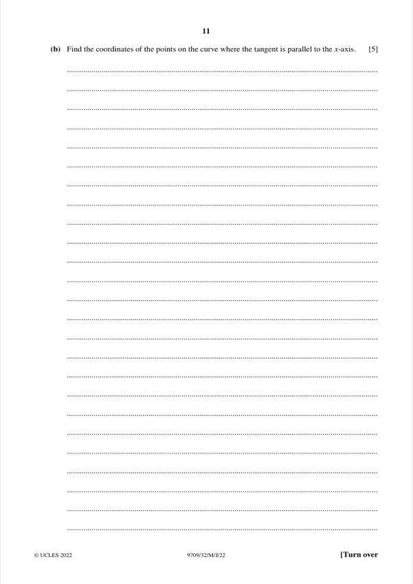
(b) [5] Find the points where the tangent is parallel to the x-axis.
(0, −∛3) and (−2, 1)
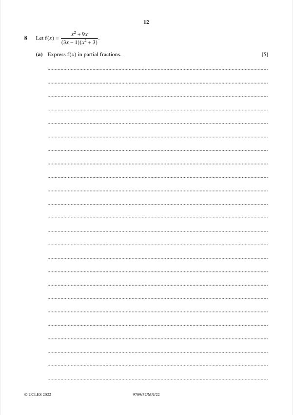
(a) [5] f(x) = (x² + 9x)/((3x − 1)(x² + 3)). Express in partial fractions.
1/(3x − 1) + 3/(x² + 3)
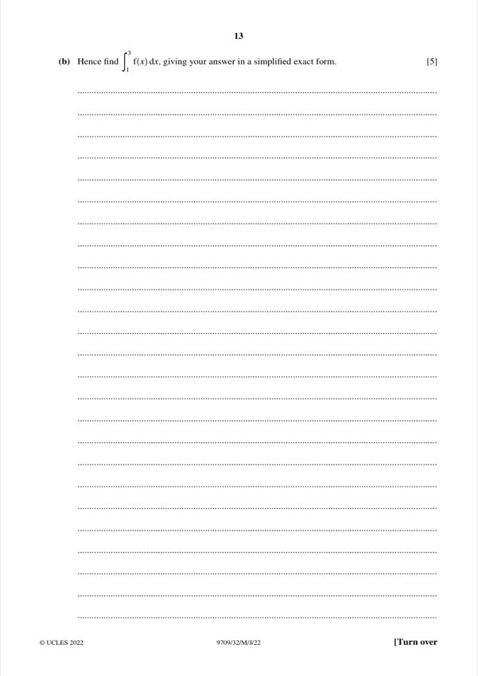
(b) [5] Hence find ∫₁³ f(x) dx in simplified exact form.
(2/3)ln 2 + √3π/6
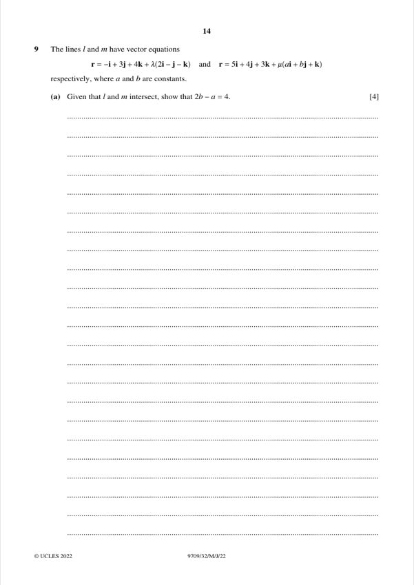
(a) [4] Lines l: r = −i + 3j + 4k + λ(2i − j − k) and m: r = 5i + 4j + 3k + μ(ai + bj + k). Given they intersect, show 2b − a = 4.
Shown
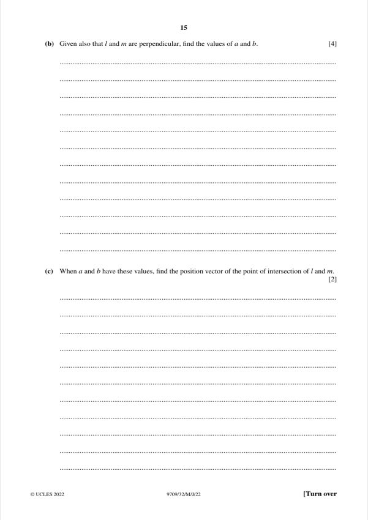
(b) [4] Given also that l and m are perpendicular, find a and b.
a = 2, b = 3
(c) [2] Find the position vector of the intersection point.
3i + j + 2k
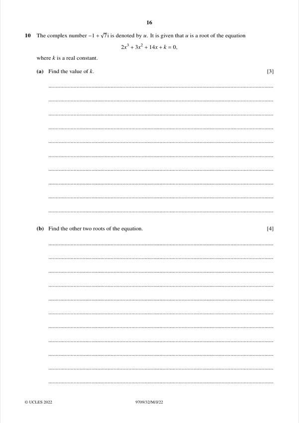
(a) [3] u = −1 + √7 i is a root of 2x³ + 3x² + 14x + k = 0. Find k.
k = −8
(b) [4] Find the other two roots.
−1 − √7 i and ½
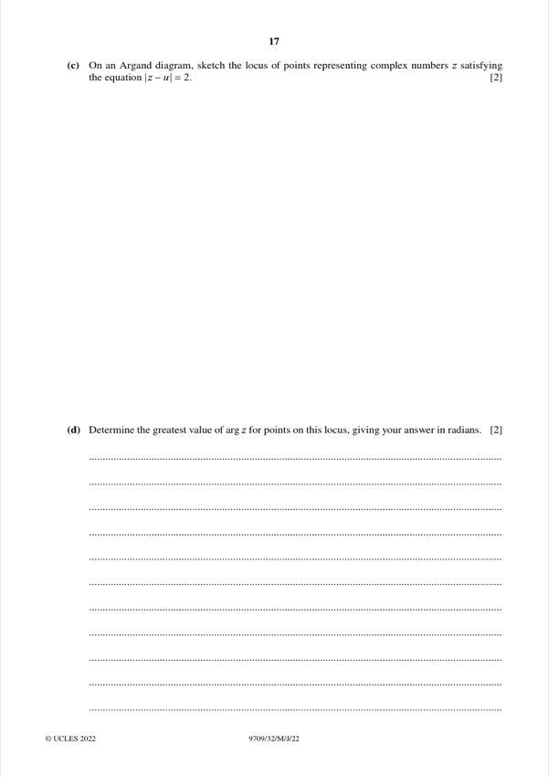
(c) [2] Sketch the locus |z − u| = 2 on an Argand diagram.
Circle, centre (−1, √7), radius 2
(d) [2] Greatest arg z on the locus.
arg z = 5π/4 − arctan√7 ≈ 2.72 rad